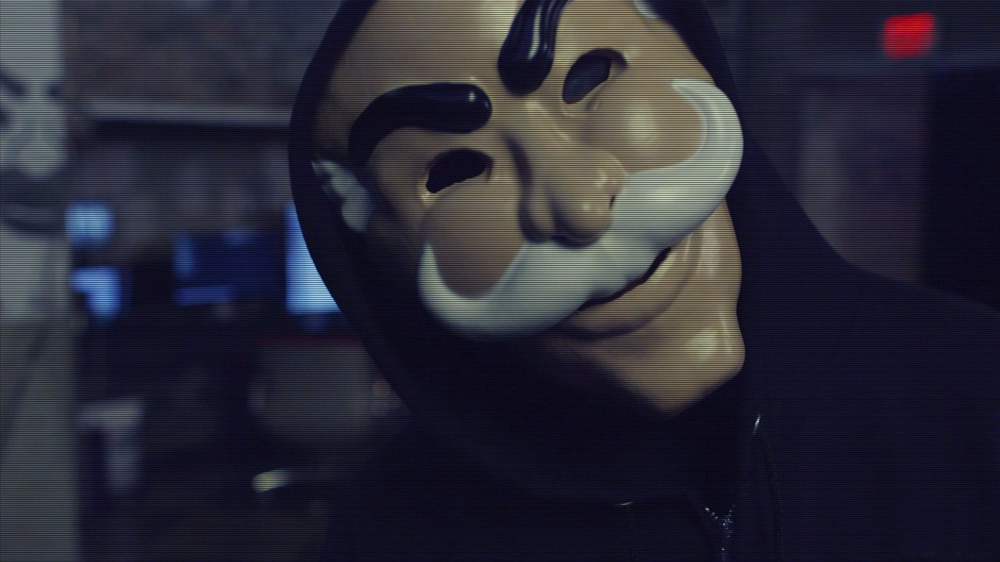

Vídeos do Sr. Robo e a Máscara
Mr. Robot criou uma série de vídeos curtos que apresentam o manifesto da fsociety, além de alertar seus inimigos sobre suas próximas ações.
O personagem usa uma máscara de plástico, uma cartola, um smoking e empunha uma bengala. Sua voz está fortemente distorcida. O homem é interpretado por Mr. Robot na primeira temporada e Darlene na segunda temporada. Os vídeos são filmados em VHS e carregados usando o Vimeo.
Máscara
Elliot e Darlene adotam a máscara pela primeira vez depois que Darlene encontra uma em uma loja de dez centavos em Chinatown no Halloween de 2014.
Ela é tirada de um filme de terror obscuro dos anos 80 que os Aldersons adoram chamado The Careful Massacre of the Bourgeoisie.
No filme, crianças ricas e desagradáveis são brutalmente assassinadas por um homem usando a máscara.
A máscara lembra o Monopoly Man do jogo Parker Brothers. O homem do Monopólio, cujo nome verdadeiro é Rich Uncle (mais tarde Milton) Pennybags, apareceu pela primeira vez na versão de 1936 do jogo.ele foi atraído para se parecer com os proprietários ultra-ricos do início do século 20, que compravam e vendiam propriedades na cidade de Nova York. Essa atividade formou a base do jogo Monopoly, no qual os jogadores compram e vendem ruas, serviços públicos, ferrovias e prédios em um tabuleiro de jogo usando os nomes das ruas de Atlantic City. O uso do traje pelo Sr. Robot serve como uma forma de zombaria, ridicularizando os equivalentes modernos de pessoas com as quais foi projetado para se parecer.
A máscara do Sr. Robot também se assemelha à máscara britânica de Guy Fawkes. A máscara tem uma longa história, que remonta à Conspiração da Pólvora, uma tentativa de explodir a Câmara dos Lordes britânica em 1605. Os conspiradores eram liderados por Robert Catesby, mas as máscaras levavam o nome de Guy Fawkes, responsável pela os explosivos. As máscaras apareceram pela primeira vez no início de 1800, quando crianças implorando por dinheiro na Noite da Fogueira, o aniversário da trama, começaram a usar as máscaras, efígies de Guy Fawkes, e pedir, “comentários para o cara”. Com o tempo, versões comerciais das máscaras se tornaram disponíveis, com a máscara contemporânea projetada pelo ilustrador David Lloyd. Como a popularidade da Bonfire Night foi suplantada pelo feriado americano Halloween, a máscara tornou-se um símbolo de protesto depois que apareceu com destaque na graphic novel "V for Vendetta", notavelmente usada durante o recente Movimento Occupy.
A máscara de Guy Fawkes tornou-se um modelo para o Sr. Robot porque é usada por partidários do grupo ativista organizado, Anonymous, que persegue objetivos semelhantes e usa meios semelhantes aos da fsociety. Apoiadores anônimos regularmente protestam contra as ações de governos, corporações e indivíduos que consideram injustas (ou contra 'os 99%') tomando medidas de vigilância, geralmente realizando ataques cibernéticos. Eles também postam vídeos de aviso on-line usando máscaras de Guy Fawkes de maneira semelhante aos vídeos da fsociety. Apoiadores anônimos também podem usar a máscara de Guy Fawkes quando participarem da Marcha do Milhão de Máscaras em cidades ao redor do mundo no Dia de Guy Fawkes (5 de novembro).